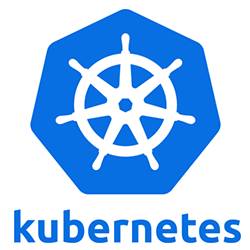

Kubernetes is an open-source container orchestration system for automating application deployment, scaling, and management. It was originally designed by Google, and is now maintained by the Cloud Native Computing Foundation. It aims to provide a "platform for automating deployment, scaling, and operations of application containers across clusters of hosts". It works with a range of container tools, including Docker. Many cloud services offer a Kubernetes-based platform or infrastructure as a service (PaaS or IaaS) on which Kubernetes can be deployed as a platform-providing service. Many vendors also provide their own branded Kubernetes distributions.
Understand The Basics.